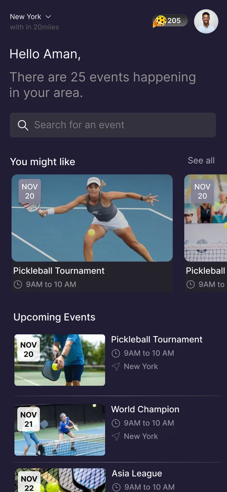
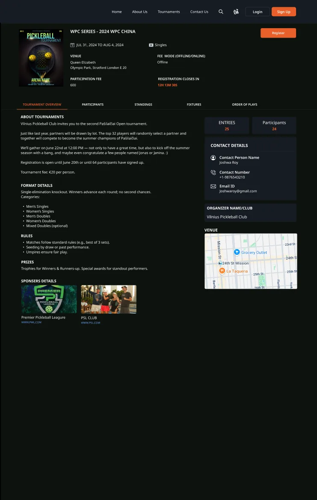
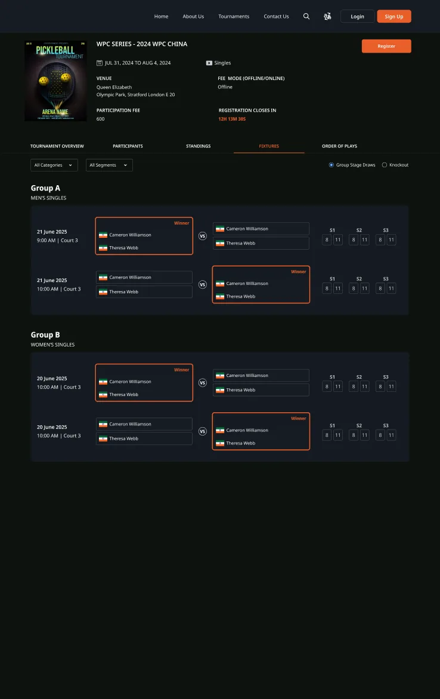
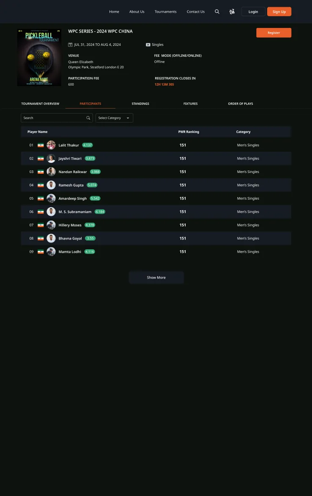
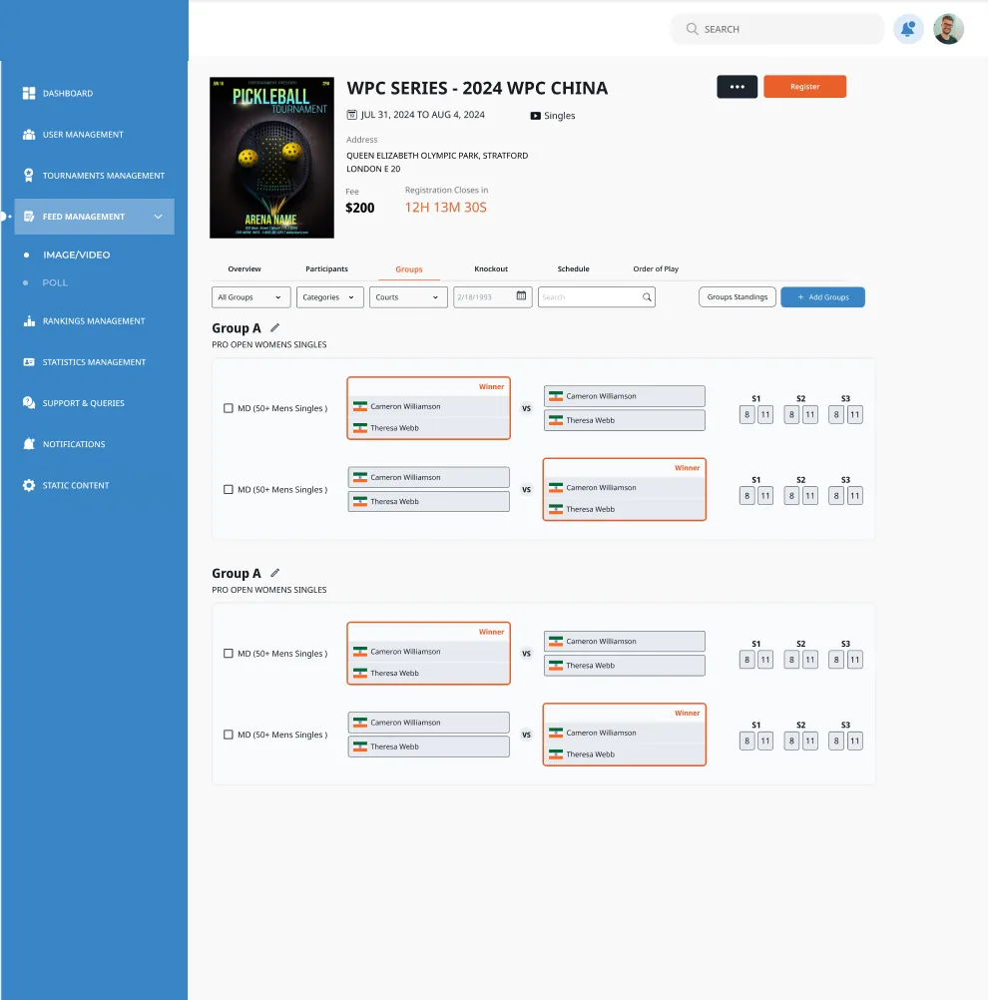

Every rally, one platform.
Designing a pickleball tournament platform end to end: a public website where players find events and follow brackets, an admin console for organisers and referees, and a companion app that turns spectators into fans.



Pickleball tournament platform
One platform for the whole tournament: players register and follow their draw, organisers and referees run the day, and fans keep score, back their team and climb the leaderboard.
The fastest-growing sport, run on spreadsheets.
Pickleball tournaments were growing fast, but the experience around them hadn't kept up. Players hunted for events across sites, organisers juggled draws and scores by hand, and spectators had no reason to stay engaged between matches.
I led the design team that built the platform as three connected products sharing one data model: tournaments, players, matches and scores. My job was setting the direction, running reviews and keeping web, admin and mobile consistent as each one shipped.
Find, enter, follow
Discover events, register, and follow standings and brackets.
Run the tournament
Set up events, groups and knockouts, and manage entries.
Score the match
Assigned matches and live score entry that updates everywhere.
Stay in the game
Live scores, team picks, points and leaderboards in the app.
- My role
- Design manager
- Client
- Tournament platform, USA
- Products
- Website, admin, fan app
- Themes
- Dark & light
- Status
- Launched
One tournament, four very different users.
The same match means different things to each person: a result to a player, a task to a referee, a schedule to an organiser and a story to a fan. The platform had to serve all four from one source of truth.
Events were hard to find
Upcoming, ongoing and completed tournaments were scattered, with no clear way to register or follow one.
Draws were opaque
Players couldn't easily see their group, next match or where they stood in a knockout.
Running the day was manual
Organisers built brackets by hand and chased referees for scores.
Fans had nothing to do
Spectators watched one match, then left. There was no reason to come back.
Borrowed from the best of sports media
The team studied football, rugby and basketball apps and player-stat sites, then mapped every user flow for guests and signed-in users, before and after a match.
The match is the hero
Big scores, clear opponents and one obvious next action on every match card.
One state, every screen
Not started, live or completed: the same match shows the same state on web, admin and app.
Dark by default
A broadcast-style dark theme that makes photos and scores pop, with a light admin for long working sessions.
Give fans a role
Picks, points and leaderboards turn watching into playing along.
From finding an event to following the final
The website lets anyone browse ongoing and upcoming tournaments. Each tournament page grows with the event: overview and registration first, then participants, group standings, a live knockout bracket and the order of play.




Tabs that follow the event
Overview, participants, standings, fixtures and order of play: the same tabs before, during and after, so people always know where to look.
Guest and signed-in paths
Guests can browse everything; signing in adds registration and highlights your own matches in every table.
Designed for match states
Flows were mapped for matches not started and completed, so empty brackets and final results both look intentional.
Run the whole day from one screen
Organisers create tournaments, generate groups and knockouts, assign referees and publish the schedule. Referees see only their matches and enter scores that update the website and app instantly.


A light theme for work
The admin uses a calm light theme with a fixed sidebar, built for hours of data entry rather than browsing.
Assign from either side
Organisers can assign a referee from the tournament, or a tournament from the referee: whichever they're looking at.
Same components, new context
Brackets and group tables reuse the player-facing components, so what admins edit is exactly what players see.
Turning spectators into players
The companion app answers "what's happening near me?" and gives fans something to do: follow live scores, build a team from real players, earn points and climb a league leaderboard.
Location first
Home opens with events near you, because most fans watch where they live.
Points everywhere
A coin balance in the header and points on every leaderboard make engagement visible.
Fantasy, kept simple
Building a team is one list with a plus button per player, not a draft room.
What shipped
The platform launched with all three products working from one data model, so a score entered by a referee appears on the website and in the app at the same moment.
connected products: website, admin console, fan app
user roles served from one source of truth
themes: a dark broadcast look and a light admin
shared component set across web and mobile
Design the data before the screens. Agreeing on what a tournament, match and score are, and their states, let three products evolve without contradicting each other.
Map every state. Guest or signed in, match not started or completed: drawing each path up front removed most of the late-stage surprises.
Give people a reason to return. Scores inform; points, picks and leaderboards are what bring fans back on the next match day.